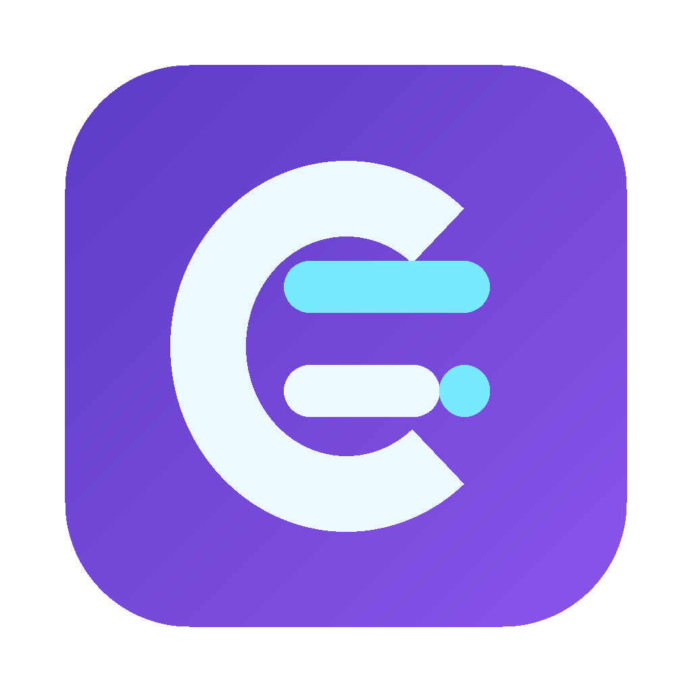

Caps
Preparing your workspace…
01Quiet orbit
A refined version of the current splash. A slow ring, soft violet glow, and familiar app mark keep startup calm.
CAPS / VISUAL EXPLORATION
Three loading-screen directions, designed for CAPS’ compact 360 × 220 launch window.

Preparing your workspace…
A refined version of the current splash. A slow ring, soft violet glow, and familiar app mark keep startup calm.
Getting things ready…
YOUR AUDIO. YOUR WORKSPACE.A gently moving waveform connects the launch experience to audio transcription. More expressive, with very little visual clutter.
Preparing your caption workspace…
A highlighted caption introduces CAPS’ purpose immediately. The moving rail signals activity while the workspace opens.